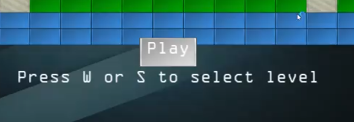
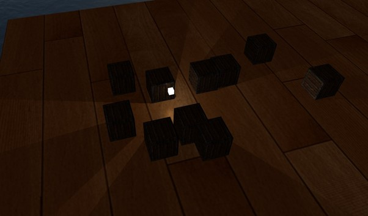

<link
  rel="stylesheet"
  href="https://use.fontawesome.com/releases/v5.8.2/css/all.css"
  integrity="sha384-oS3vJWv+0UjzBfQzYUhtDYW+Pj2yciDJxpsK1OYPAYjqT085Qq/1cq5FLXAZQ7Ay"
  crossorigin="anonymous"
/>

<link rel="preconnect" href="https://fonts.gstatic.com">
<link href="https://fonts.googleapis.com/css2?family=Roboto+Mono:wght@300&display=swap" rel="stylesheet">
<link href="https://fonts.googleapis.com/css2?family=Raleway:wght@600&display=swap" rel="stylesheet">
<link href="https://fonts.googleapis.com/css2?family=Roboto+Condensed:wght@300&display=swap" rel="stylesheet">
<link rel="stylesheet" href="info.css">

<head>
<meta name="viewport" content="width=device-width">
<title>Learning OpenGL</title>
</head>

<main>
  <nav id="navbar">
    <h2 id = "projectTitle">Learning OpenGL</h2>
    <a href="index.html">Back</a>
  </nav>

  <div style="min-height:7vh;"></div>

<p>Over the course of August 2021 I decided that I would like to learn OpenGL. Like most people I started with LearnOpenGL.com this resulted with me wanting to create a 2D game framework that I could use to create basic games. The project however did start to lose my attention as University started a month later. This project originally started off with just learning OpenGL so I also implemented various lighting techniques and shader effects such as point shadows.</p>
<p>Built in C++14 using OpenGL 3.4</p>
<p>Built in 2 months. August 2021 - September 2021</p>
  <button><a href="https://github.com/AdamHarris-GamesProgrammer/LearnOpenGL" target="_blank">GitHub Repository</a></button>
  <div id = "body">
    <h2>Features</h2>
    <div class="features">
      <div>
        <li>Post processing effects</li>
        <li>2D Collision Systems</li>
      </div>
      <div>
        <li>Simplistic Sprite Drawing</li>
        <li>Sprite Atlases</li>
      </div>
      <div>
        <p>UI Framework</p>
        <li>UI Object Alignment with parent UI Objects</li>
        <li>Buttons are usable</li>
      </div>
      <div>
        <li>Point Shadows</li>
        <li>Instanced Drawing</li>
        <li>Model Loading</li>
      </div>
      <div>
        <div class="videoFrame"></div>
      </div>
      <div>
        <div class="videoFrame"></div>
      </div>
    </div>
    <div>
      <h2>Tweets</h2>
      <div class="tweets">
        <blockquote class="twitter-tweet"><p lang="en" dir="ltr">Thought I&#39;d show some more progress on my 2D framework, text can now be left, center, and right-aligned. With buttons that function as well. The next step is to make an input class to simplify key checks. <a href="https://twitter.com/hashtag/gamedev?src=hash&amp;ref_src=twsrc%5Etfw">#gamedev</a> <a href="https://twitter.com/hashtag/gamedevelopment?src=hash&amp;ref_src=twsrc%5Etfw">#gamedevelopment</a> <a href="https://twitter.com/hashtag/opengl?src=hash&amp;ref_src=twsrc%5Etfw">#opengl</a> <a href="https://twitter.com/hashtag/software?src=hash&amp;ref_src=twsrc%5Etfw">#software</a> <a href="https://twitter.com/hashtag/learnprogramming?src=hash&amp;ref_src=twsrc%5Etfw">#learnprogramming</a> <a href="https://twitter.com/hashtag/indiedev?src=hash&amp;ref_src=twsrc%5Etfw">#indiedev</a> <a href="https://t.co/yprXoqj476">pic.twitter.com/yprXoqj476</a></p>&mdash; Adam Harris (@AdamHarrisDev) <a href="https://twitter.com/AdamHarrisDev/status/1441328578788954116?ref_src=twsrc%5Etfw">September 24, 2021</a></blockquote> <script async src="https://platform.twitter.com/widgets.js" charset="utf-8"></script>
        <blockquote class="twitter-tweet"><p lang="en" dir="ltr">Made Breakout in <a href="https://twitter.com/hashtag/OpenGL?src=hash&amp;ref_src=twsrc%5Etfw">#OpenGL</a> Thanks to <a href="https://t.co/V0zsRquxOa">https://t.co/V0zsRquxOa</a> Now looking forward to expanding this and then start work on my own 2D game engine/framework <a href="https://twitter.com/hashtag/gamedev?src=hash&amp;ref_src=twsrc%5Etfw">#gamedev</a> <a href="https://twitter.com/hashtag/gamedevelopment?src=hash&amp;ref_src=twsrc%5Etfw">#gamedevelopment</a> <a href="https://twitter.com/hashtag/indiegamedev?src=hash&amp;ref_src=twsrc%5Etfw">#indiegamedev</a> <a href="https://twitter.com/hashtag/graphics?src=hash&amp;ref_src=twsrc%5Etfw">#graphics</a> <a href="https://twitter.com/hashtag/programming?src=hash&amp;ref_src=twsrc%5Etfw">#programming</a> <a href="https://twitter.com/hashtag/tech?src=hash&amp;ref_src=twsrc%5Etfw">#tech</a> <a href="https://t.co/3xg1bxTNas">pic.twitter.com/3xg1bxTNas</a></p>&mdash; Adam Harris (@AdamHarrisDev) <a href="https://twitter.com/AdamHarrisDev/status/1438446311204868100?ref_src=twsrc%5Etfw">September 16, 2021</a></blockquote> <script async src="https://platform.twitter.com/widgets.js" charset="utf-8"></script>
        <blockquote class="twitter-tweet"><p lang="en" dir="ltr">Instanced drawing<br>Amount of asteroids: 1,000,000 (that&#39;s right 1 million asteroids)<br>FPS: 20<br>\3 <a href="https://t.co/53VUosPZ8Z">pic.twitter.com/53VUosPZ8Z</a></p>&mdash; Adam Harris (@AdamHarrisDev) <a href="https://twitter.com/AdamHarrisDev/status/1435536267861704708?ref_src=twsrc%5Etfw">September 8, 2021</a></blockquote> <script async src="https://platform.twitter.com/widgets.js" charset="utf-8"></script>
      </div>
    </div>
    <div>
      <h2>Challenges</h2>
      <p>This was my first project using OpenGL and as such I ran into a few obstacles at first such as using uniforms and understanding how VAOs, VBOs, and IBOs worked in OpenGL compared to DirectX.  </p>
      <p>As I shifted the project to creating a 2D framework I was having to make a lot of architectural decisions such as how should I make this system easy to use for the end user. I opted on utilising a large amount of abstraction to remove complexities from the end user while still allowing them plenty of control in how data was processed. To handle button presses and events I opted for utilising the Observer design pattern to handle buttons being clicked or mouse and keyboard events.</p>
    </div>
  </div>

  <footer id="footer">
    <h3 id="footer-text">Adam Harris &copy;2021</h3>
  </footer>
</main>
